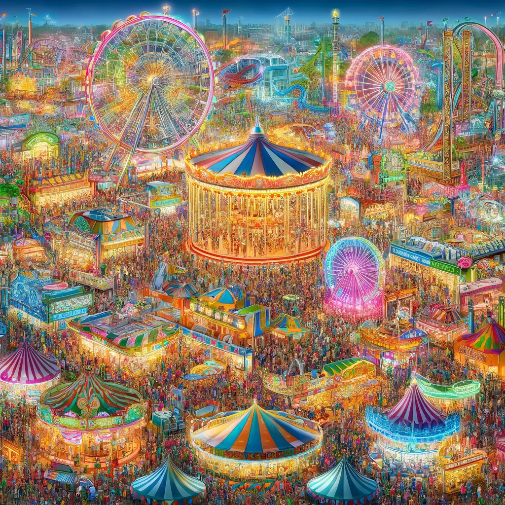
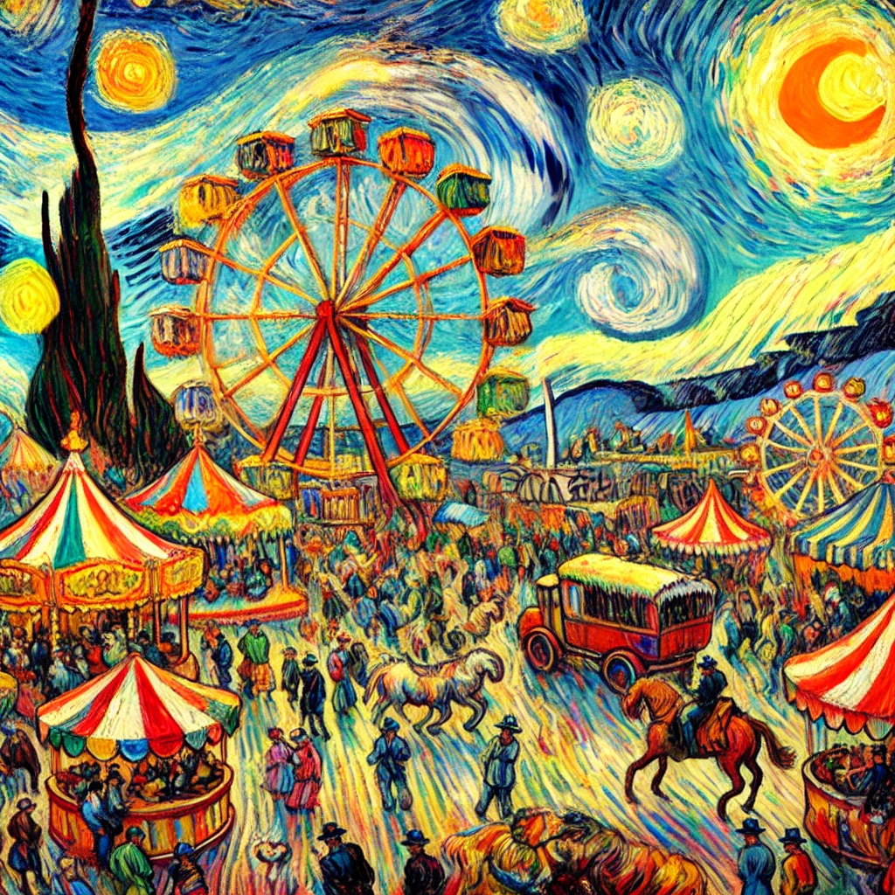
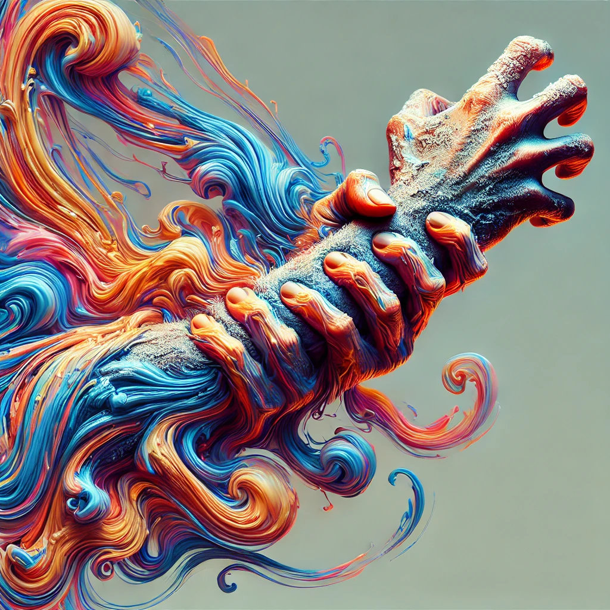
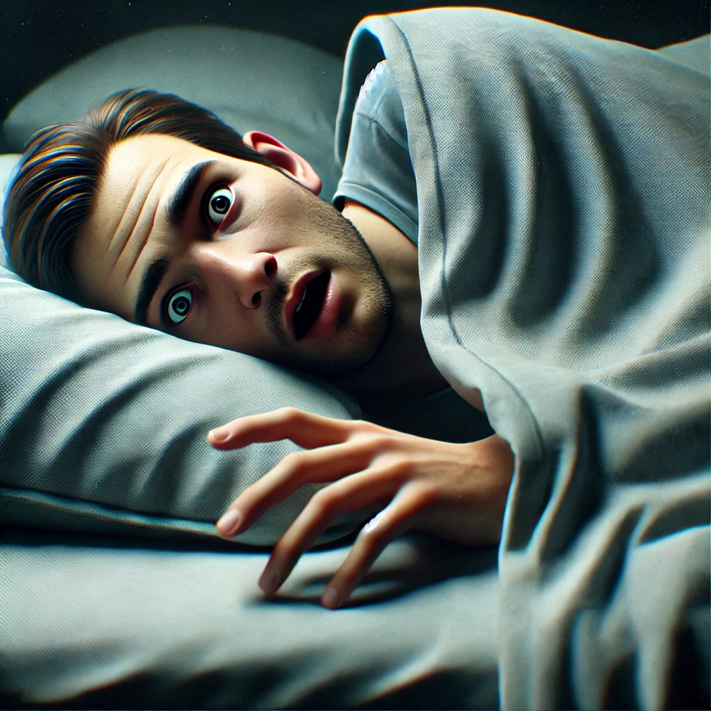
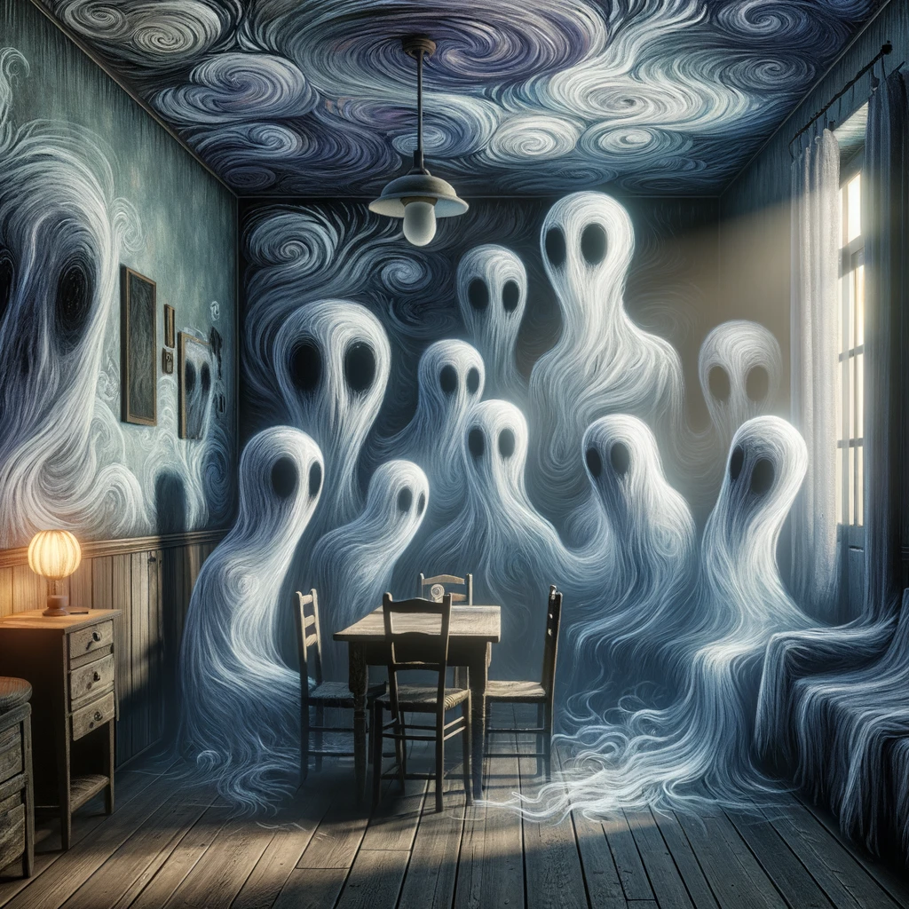
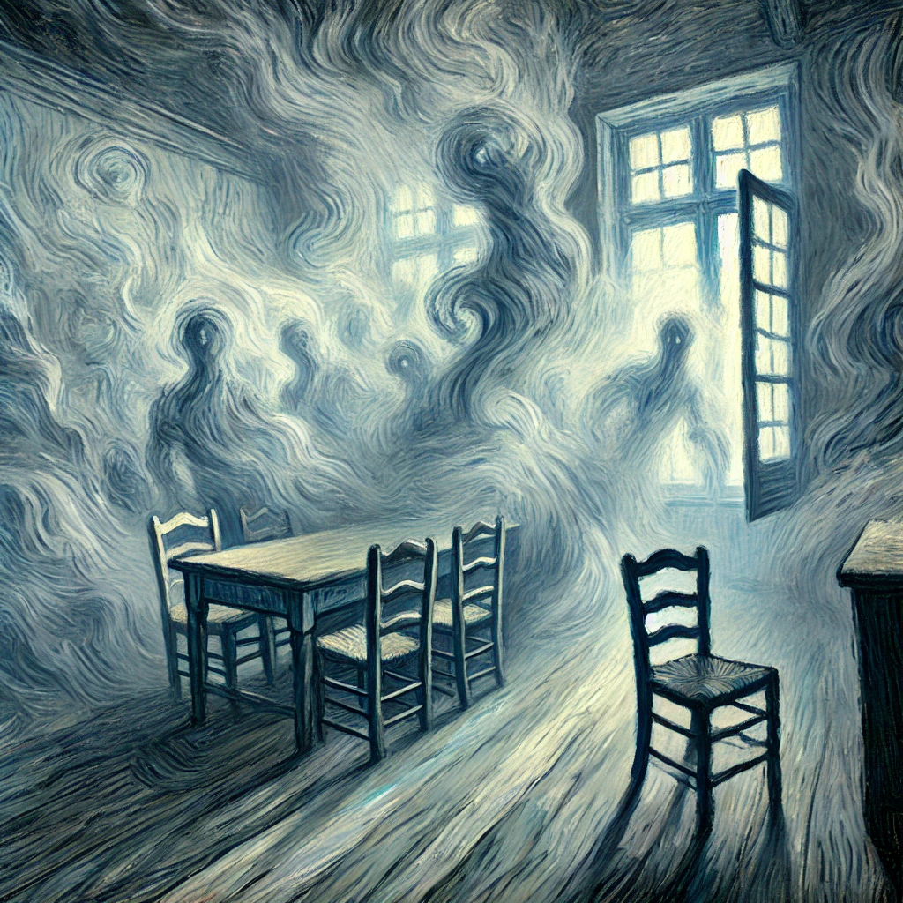

Dieses Projekt hat sich um das Generieren von Texten und Bilder mit KI gedreht. Das Ziel war es eine Bildergeschichte zu erstellen. Genutzt wurde für dieses Projekt ChatGPT 4.o.
In der Geschichte Das fliegende Zimmer geht es um einen Fiebertraum, bei dem der Träumer vor dunklen Gestalten flieht und dabei immer wieder in sein Zimmer zurückkehrt bis er irgendwann aus seinem Traum erwacht.
Bei dem Generieren des Textes wurde der KI keine Grenzen gesetzt. Die einzige Vorgabe war, dass es ein Fiebertraum mit gruseligen Elementen sein soll. Die Geschichte, die dabei geschrieben wurde, bildete die Grundlage für die Bildergeschichte. Teilweise musste diese Geschichte noch umgeschrieben werden, da sie an einigen Stellen keinen Sinn ergeben hat und Übergänge von einem Abschnitt zum nächsten nicht passten. Die Rechtschreibung musste zudem auch überarbeitet werden.
Zu jedem Abschnitt des generierten Textes wurden im nächsten Schritt die Bilder generiert. Dabei gab es eine grundlegende Schwierigkeit:
Ein einheitlicher Stil
Für eine Bildergeschichte sind die Bilder ein wichtiger Bestandteil der Geschichte. Dabei ist es besonders wichtig, dass sie einem einheitlichen Stil entsprechen und zueinander passen. Um das zu gewährleisten, war die Idee für das Generieren einen Künstler als Vorbild zu nehmen. In dem Fall war die Stary Night von Vincent van Gogh passend, da dies dem Post-Impressionismus angehört und sich langsam vom realistischen Stil löst und eine abstraktere Malweise vorzieht und Erinnerungen und Emotionen mit in dem Bild einfließen. Genau dies sind auch Elemente eines Traums. Es geht um Erinnerungen aus dem Alltag, die emotional und abstrakter im Traum verarbeitet werden.
Beim Generieren von Bildern mit Vorbild der StaryNight von van Gogh wurde oft allerdings nicht nur der Stil aufgegriffen, sondern ganze Elemente der Stary Night, wie zum Beispiel die Zypressen oder der Himmel. Durch Formulierungen, wie mit dem Pinselduktus von van Gogh, wurden die gewünschten Bilder letztendlich erfolgreich generiert.

ohne Stil

Stary Night
Generell muss das, was auf dem Bild zu sehen sein soll, gut beschrieben werden, um ein Bild zu generieren, das auch Sinn ergibt. Im Traum ist zwar alles möglich und der Fantasie sind keine Grenzen gesetzt, aber dann müssen sich auch solche Elemente in den Bildern wiederholen, wie zum Beispiel die sieben Finger (Abb. 1).
Das letzte Bild der Geschichte weicht vom Stil der anderen Bilder ab. Hier entspricht das Bild einem realistischen Stil, um den Wechsel aus der Traumwelt wieder in die Realität zu verdeutlichen, was das Aufwachen aus dem Traum symbolisieren soll (Abb. 2).

Abbildung 1

Abbildung 2
Auch die Gestalten, die in dem Traum immer wieder auftauchen, sollen in den Bildern immer ungefähr gleich aussehen. Selbst bei der gleichen Beschreibung der Gestalten, hat die KI unterschiedliche Aussehen generiert:


KI
Im Zuge dieses Projektes wurden die Vor- und Nachteile von KI generell und auch explizit in der Kunst aufgezeigt.
Es ist ein Tool mit dem in Sekunden Bilder und Texte generiert werden können. Es kann als Inspiration dienen und eine Grundlage für Projekte bieten. Wie bei diesem Projekt die Geschichte über den Fiebertraum, die die Grundlage für das Erstellen der Bilder bildet.
Doch durch die Schwierigkeiten, die bei dem Projekt aufkamen, wird deutlich, dass sie noch keinen Menschen ersetzen und eigenständig eine Geschichte erstellen kann, die Sinn ergibt.
 Dieses Projekt hat sich um das Generieren von Texten und Bilder mit KI gedreht. Das Ziel war es eine Bildergeschichte zu erstellen. Genutzt wurde für dieses Projekt ChatGPT 4.o.
Dieses Projekt hat sich um das Generieren von Texten und Bilder mit KI gedreht. Das Ziel war es eine Bildergeschichte zu erstellen. Genutzt wurde für dieses Projekt ChatGPT 4.o.